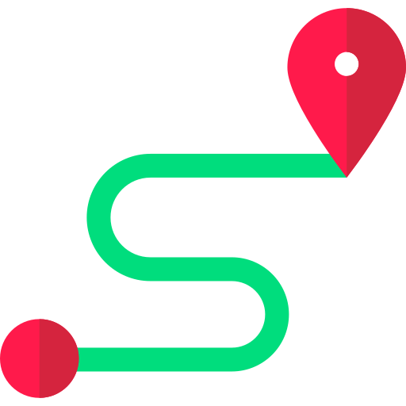
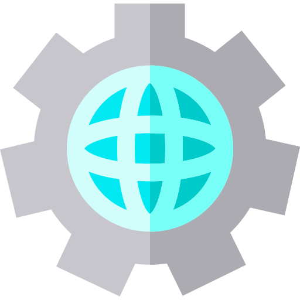
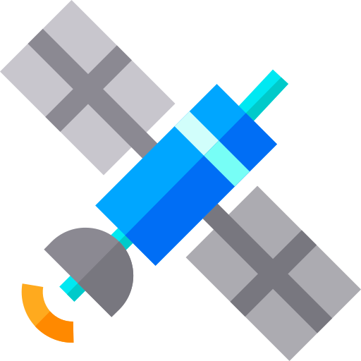
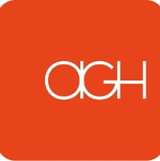
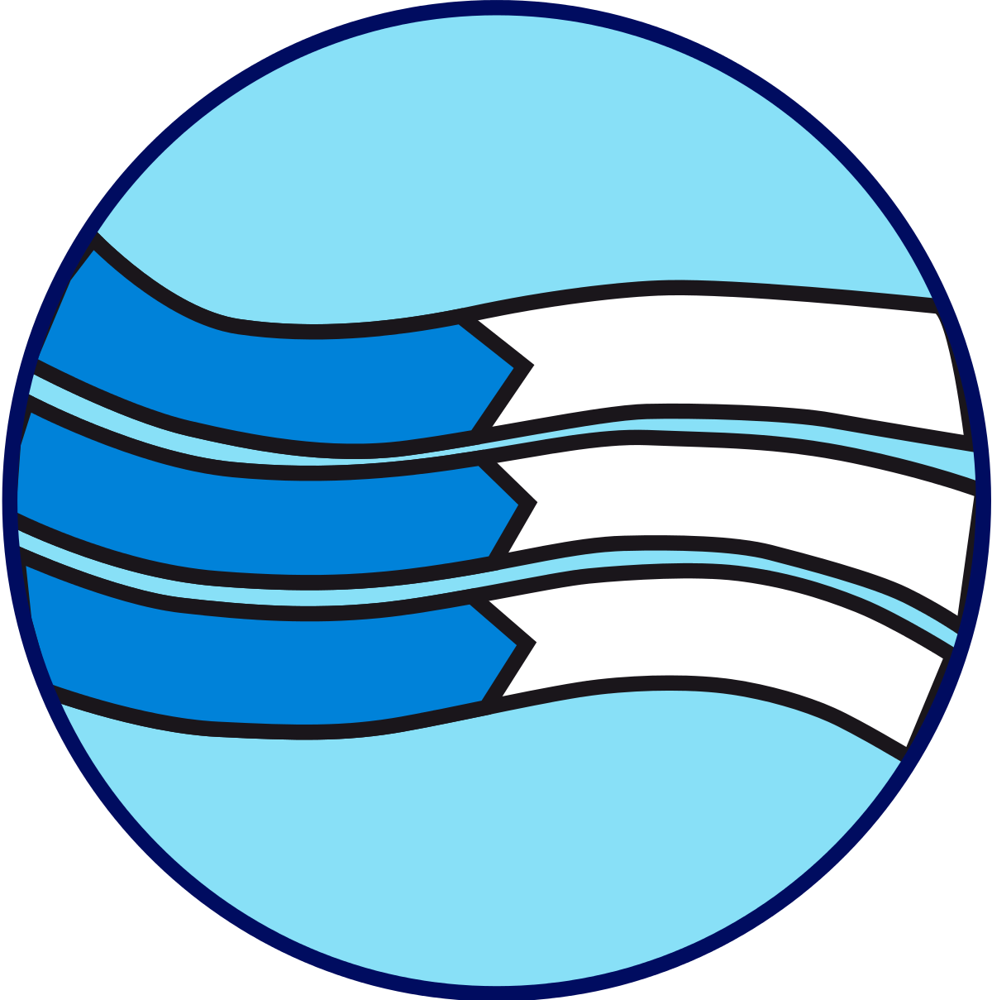

- Skills
-

GIS Software/Web: ArcGIS Pro, ArcGIS 9.3-10.7, ArcGIS Online, QGIS, Leaflet, PostGIS, GeoDa, Mapbox -

Programming: Python, JavaScript (Beginner, focus on Leaflet and D3), SQL (Beginner), HTML/CSS -

Remote Sensing Software: IDRISI Selva, ERDAS IMAGINE, SAGA GIS, PCI Geomatica
- Professional Experience
-
GIS Specialist (June 2019 - Present)
AKKA Technolgoies
Casablanca, Morocco
- Conducted FTTx networks planning, design and dimensioning
- Created high quality maps and conducted geospatial analysis for FTTx networks
- Used Python for tasks automation under QGis
- Managed GIS databases to improve data accuracy and efficient data-sharing practices
- Assisted and trained operators on geographic information systems
-

GIS Specialist (March 2019 - May 2019)AGH Consulting
Casablanca, Morocco
-
GIS Specialist (October 2018 - February 2019)
LINK4U
Casablanca, Morocco
-
GIS Analyst (March. 2019 - Sep. 2019)
IT ENVIRONNEMENT
Temara, Morocco
-
GIS Intern (Feb. 2019 - Sep. 2019)
Navcities
Temara, Morocco
-

GIS Intern Feb. 2016 - June 2016National Office of Electricity and Drinking Water
Rabat Morocco